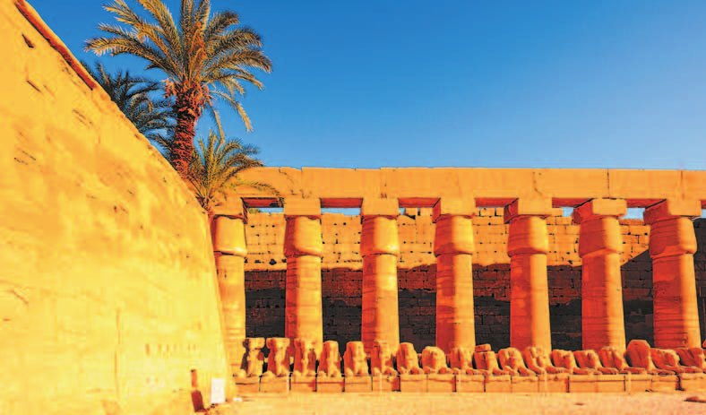
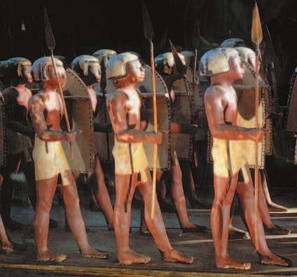
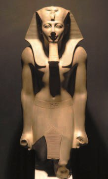
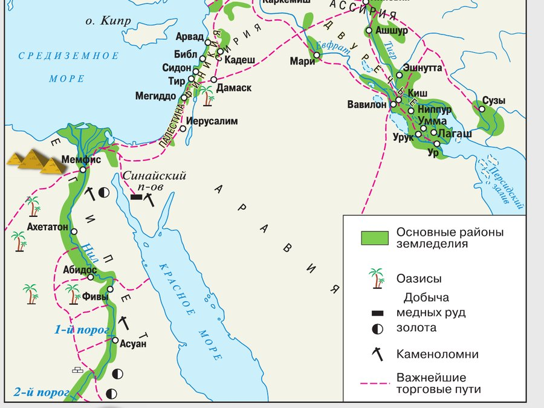
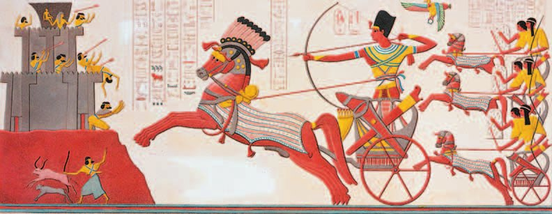
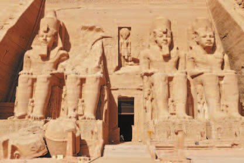

Хозяйство
Египтяне научились получать — сплав меди с оловом. Бронзовыми орудиями обрабатывали почву, строили дамбы и каналы.
Бронзу взяли и ремесленники: из неё делали изделия и оружие. Бронзовые мечи и топоры были крепче медных и не гнулись при ударе.
В середине 2-го тысячелетия до н. э. Египет вступил в новую полосу расцвета. Столицей в это время стали — там строили новые дворцы и храмы.
Вокруг жили разные народы: ливийцы, нубийцы, сирийцы, финикийцы. Египтяне с ними часто имели дело — но отношения были далеко не мирными: войну и захват добычи египтяне предпочитали торговле.
У жителей Палестины и Сирии египтяне переняли коневодство. Так у них появился новый тип войск — отряды .
Древние египтяне научились получать бронзу из сплава меди с оловом. Орудия труда из бронзы (например, плуг с бронзовым наконечником) они применяли при обработке почвы, при строительстве дамб и каналов. Бронзовые орудия труда использовали и ремесленники, изготавливая разные изделия и оружие. Бронзовые мечи и топоры были крепче медных и не гнулись при ударе.
В середине 2-го тысячелетия до н. э. Древний Египет вступил в очередную фазу расцвета. Столицей государства в это время стали Фивы. Здесь строились новые дворцы и храмы. Территорию Африки и берега Средиземного моря населяли разные народы — ливийцы, нубийцы, сирийцы, финикийцы и др. Со многими из них египтяне часто взаимодействовали. Обычно эти отношения были далеко не мирными — египтяне предпочитали торговле войну и захват добычи. Египтяне переняли у жителей Палестины и Сирии коневодство, что позволило им создать новый тип войск — отряды боевых колесниц.
- Почему применение орудий труда из металлов и новых технологий привело к расцвету хозяйства в Древнем Египте?
1. Бронза — это медь с оловом. Почему бронзовый меч оказался лучше медного?
2. Египтяне «предпочитали торговле войну и захват добычи». Как это связано с тем, что у них появились колесницы?
3. Почему расцвет хозяйства и расцвет государства в этом параграфе идут вместе?
Войско
До того как появилось государство, египетское войско было : свободных людей собирали на время военных действий, а потом распускали.
Фараоны создали сильную для своего времени армию, и в итоге она стала , то есть постоянной. Её основу составляли пехотинцы: их набирали из крестьян и учили владеть оружием, нападать, защищаться и сражаться единым строем.
Армия делилась на отряды. У одних были копья и щиты, у других — топоры и кинжалы, у третьих — лук и стрелы. Были и отряды с — ремнями для метания камней.
Главную ударную силу составляли отряды колесниц. На каждой размещались два воина: один управлял и прикрывал щитом другого, а тот стрелял из лука и метал дротики — короткие копья.
Сражение начинали легковооружённые воины: засыпали неприятеля стрелами и камнями. Затем в бой вступали колесницы — они должны были прорвать ряды врага и посеять панику. За ними стройными рядами шли воины с копьями и щитами, топорами и кинжалами. Бежавшего врага преследовали на колесницах.
До образования государства египетское войско состояло из ополчения — свободного населения, которое собирали на время военных действий. Фараоны создали сильную для своего времени армию, и в итоге она стала регулярной (постоянной). Основу регулярной армии составляли пехотинцы, их набирали из крестьян и обучали владеть оружием, нападать на врага, защищаться, сражаться единым строем.
Армия делилась на отряды. Воины одних отрядов имели копья и щиты, вооружением других были топоры и кинжалы, третьих — лук и стрелы. В составе армии находились отряды, вооружённые пращами (ремнями для метания камней).
Главную ударную силу в египетской армии составляли отряды колесниц. На каждой колеснице размещались два воина: один управлял и прикрывал щитом другого, стрелявшего из лука и метавшего дротики (короткие копья).
Сражение начинали легковооружённые воины, засыпавшие неприятеля стрелами и камнями. Затем в бой вступали колесницы. Они должны были прорвать ряды неприятеля и посеять панику. За ними стройными рядами шли воины с копьями и щитами, топорами и кинжалами. Бежавшего врага преследовали на колесницах.

▲ Почему египетское войско было разделено на различные отряды?
- Какую тактику использовали египтяне на поле боя?
4. Чем регулярная армия лучше ополчения?
5. Почему войско делили на разные отряды, а не вооружали всех одинаково?
6. Почему в порядке боя колесницы шли вторыми, а не первыми?
7. Пехотинцев набирали из крестьян. Вспомни §6—7: что для крестьянина значило уйти в войско?

Тутмос III
Наивысшего расцвета Древнеегипетское государство достигло при фараоне (1490—1436 годы до н. э.). Он совершил 15 военных походов в Сирию и Палестину.
Благодаря его полководческому таланту египтяне разбили объединённое войско этих земель в . Владения Египта дошли на севере до реки Евфрат.
Покорённые народы фараон обложил : в Египет отправляли серебро, благовония, ткани, ковры, строевой лес.
На юге Тутмос расширил египетские владения в богатой золотом . Он захватил тысячи пленных и угнал их в рабство, а остальное население тоже обложил данью. Из Нубии в Египет двинулись караваны с золотом, чёрным деревом и слоновой костью.
Слава о богатстве Египта разошлась далеко за его пределы. О стране стали говорить, что у фараонов золота — как песка в пустыне.
Наивысшего своего расцвета Древнеегипетское государство достигло при фараоне Тутмосе III (3) (1490—1436 годы до н. э.). Он совершил 15 военных походов в Сирию и Палестину.
Благодаря полководческому таланту Тутмоса III (3) египтяне разбили объединённое войско этих земель в битве при Меггидо. Его владения простирались на севере до реки Евфрат. Покорённые народы фараон обложил данью; в качестве дани в Египет отправляли серебро, благовония, ткани, ковры, строевой лес.
На юге Тутмос расширил египетские владения в богатой золотом Нубии. Фараон захватил тысячи пленных, которых угнал в рабство, остальное население обложил данью. Из Нубии в Египет двигались караваны с золотом, чёрным деревом, слоновой костью. Слава о богатстве Египта распространилась далеко за его пределы. О Египте стали говорить, что у фараонов золота, как песка в пустыне.

▲ Назови государства, с которыми граничил Древний Египет. Назови страны, завоёванные Тутмосом III.
- Назови государства, с которыми граничил Древний Египет.
- Назови страны, завоёванные Тутмосом III.
- Какие последствия для Египта имели завоевания Тутмоса III?
8. Что такое дань и чем она отличается от торговли?
9. Почему про Египет стали говорить, что у фараонов золота, как песка в пустыне?
10. Тутмос III совершил 15 походов. Что, кроме золота и товаров, он привозил из них — и как это меняло египетское общество?
Рамсес II
В годы правления (примерно 1290—1223 годы до н. э.) египтяне воевали с Хеттским царством — оно было на территории нынешней Турции. захватили земли в Сирии и Палестине, которые фараон считал своими.
Война шла с переменным успехом несколько лет. Одно из главных сражений произошло у города Кадеш. Колесницы хеттов ворвались в лагерь египтян и нанесли им большой урон. Положение спас сам Рамсес II: он вскочил на колесницу и двинулся на хеттов. Хетты окружили фараона — его спасли египетские воины.
Позже Рамсес II и царь хеттов заключили . Бо́льшая часть Сирии осталась за хеттами; Палестина, большинство финикийских городов и часть юга Сирии — за Египтом. Обе стороны обязались не воевать друг против друга.
При Рамсесе II процветало строительство: создавались оросительные сооружения и новые города. Один из них — новая столица Пер-Рамсес, «Дом Рамсеса». Новые храмы возводили по всему Египту и даже в Нубии — например, храм в Абу-Симбеле.
В годы правления Рамсеса II (2) (ок. 1290—1223 годов до н. э.) египтяне воевали с Хеттским царством (царство на территории современной Турции). Хетты захватили земли в Сирии и Палестине, которые фараон считал своими. Война с переменным успехом продолжалась несколько лет. Одно из значительных сражений произошло у города Кадеш. Колесницы хеттов ворвались в лагерь египтян и нанесли им большой урон. Положение спас Рамсес II (2), он вскочил на колесницу и двинулся на хеттов. Хетты окружили фараона, его спасли египетские воины.
Позднее Рамсес II (2) и царь хеттов заключили мирный договор: бóльшая часть Сирии осталась за хеттами, Палестина, большинство финикийских городов и часть юга Сирии — за Египтом. Обе стороны приняли обязательство не воевать друг против друга.
При Рамсесе II (2) процветало строительство, создавались и оросительные сооружения, и новые города. Один из них — новая столица Пер-Рамсес («Дом Рамсеса»). Новые храмы возводили в разных городах Египта. Несколько египетских храмов построили в Нубии, например храм в Абу-Симбеле.

▲ Рассмотри рисунок и расскажи, какие эпизоды битвы на нём изображены.

- Почему правление Рамсеса II называют «золотым веком» Египта?
11. Битва при Кадеше не принесла победы ни одной стороне. Почему тогда её считают важной?
12. Тутмос III прославился походами, а Рамсеса II называют «золотым веком». В чём разница между тем, чем они запомнились?
13. «Пер-Рамсес» значит «Дом Рамсеса». Вспомни §6—7: где ты уже встречала такое название?
Подведём итоги
- Подумай, что позволило правителям Египта расширить его территорию.
- Какие государства и территории были целью завоеваний фараонов? Объясни почему.
- Объясни, как географическое положение Египта влияло на его защищённость.
- Используя дополнительные источники, подготовь презентацию (не меньше 3 слайдов) об одном из египетских храмов.
Сформулируй ответ на главный вопрос параграфа — что способствовало расцвету Древнеегипетского государства? Приведи два-три довода.
Проверь себя
Нажимай по очереди — от самого древнего события к самому близкому к нам.
1. Из чего делали бронзу?
2. Чем регулярная армия отличалась от ополчения?
3. Сколько воинов было на одной боевой колеснице?
4. При каком фараоне Египет достиг наивысшего расцвета?
5. Чем закончилась война Рамсеса II с хеттами?
6. Что такое дань?
Расскажи вслух
Хозяйство на расцвете
- Бронза из меди с оловом: плуг с бронзовым наконечником, дамбы, каналы; мечи и топоры крепче медных.
- Середина 2-го тысячелетия до н. э., столица — Фивы, новые дворцы и храмы.
- Соседи: ливийцы, нубийцы, сирийцы, финикийцы; войну предпочитали торговле; коневодство переняли у Палестины и Сирии.
Египетское войско
- Было ополчение — стало регулярное войско; пехотинцев брали из крестьян и учили строю.
- Отряды: копья и щиты, топоры и кинжалы, лук и стрелы, пращи; главная сила — колесницы, двое на каждой.
- Порядок боя: стрелы и камни → колесницы прорывают → пехота строем → погоня на колесницах.
Тутмос III
- 1490—1436 годы до н. э., 15 походов в Сирию и Палестину.
- Битва при Мегиддо, владения до Евфрата, покорённые обложены данью: серебро, благовония, ткани, ковры, лес.
- Нубия: золото, чёрное дерево, слоновая кость, тысячи пленных в рабство. «Золота, как песка в пустыне».
Рамсес II и «золотой век»
- Война с хеттами за Сирию и Палестину, битва при Кадеше, фараон сам спас положение.
- Мирный договор: Сирия хеттам, Палестина и финикийские города Египту, обязались не воевать.
- Строительство: оросительные сооружения, новые города, столица Пер-Рамсес, храмы по Египту и в Нубии — Абу-Симбел.